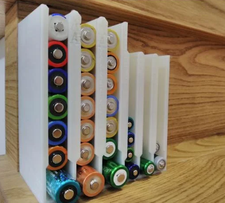
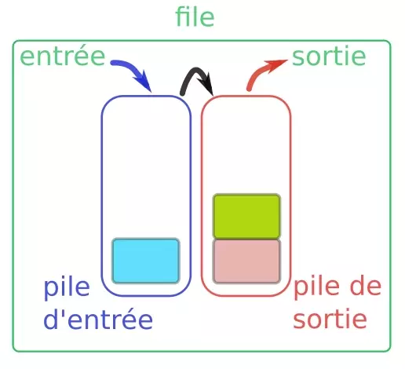

Structures de données linéaires : piles, files⚓︎
0. Préambule : interface ≠ implémentation⚓︎
Les structures que nous allons voir peuvent s'envisager sous deux aspects :
- le côté utilisateur, qui utilisera une interface pour manipuler les données.
- le côté concepteur, qui aura choisi une implémentation pour construire la structure de données.
Par exemple, le volant et les pédales constituent (une partie de) l'interface d'une voiture. L'implémentation va désigner tous les mécanismes techniques qui sont mis en œuvre pour que le mouvement de rotation du volant aboutisse à un changement de direction des roues.

Nous avons déjà abordé ces deux aspects lors de la découverte de la Programmation Orientée Objet. Le principe d'encapsulation fait que l'utilisateur n'a qu'à connaître l'existence des méthodes disponibles, et non pas le contenu technique de celle-ci. Cela permet notamment de modifier le contenu technique (l'implémentation) sans que les habitudes de l'utilisateur (l'interface) ne soient changées.
1. Structures de données linéaires⚓︎
1.1 À chaque donnée sa structure⚓︎
En informatique comme dans la vie courante, il est conseillé d'adapter sa manière de stocker et de traiter des données en fonction de la nature de celles-ci :
- Le serveur d'un café, chargé de transporter les boissons du comptoir aux tables des clients, n'utilisera pas un sac en plastique pour faire le transport : il préfèrera un plateau.
- Le chercheur de champignons, lui, n'utilisera pas un plateau pour stocker ses trouvailles : il préfèrera un panier.
- Pour stocker des chaussettes, on préfèrera les entasser dans un tiroir (après les avoir appairées), plutôt que de les suspendre à des cintres.
De même en informatique, pour chaque type de données, pour chaque utilisation prévue, une structure particulière de données se revèlera (peut-être) plus adaptée qu'une autre.
Intéressons nous par exemple aux données linéaires. Ce sont des données qui ne comportent pas de hiérarchie : toutes les données sont de la même nature et ont le même rôle. Par exemple, un relevé mensuel de températures, la liste des élèves d'une classe, un historique d'opérations bancaires...
Ces données sont «plates», n'ont pas de sous-domaines : la structure de liste paraît parfaitement adaptée.
Lorsque les données de cette liste sont en fait des couples (comme dans le cas d'une liste de noms/numéros de téléphone), alors la structure la plus adaptée est sans doute celle du dictionnaire.
Les listes et les dictionnaires sont donc des exemples de structures de données linéaires.
Même si ce n'est pas l'objet de ce cours, donnons des exemples de structures adaptées aux données non-linéaires :
Si une liste de courses est subdivisée en "rayon frais / bricolage / papeterie" et que le rayon frais est lui-même séparé en "laitages / viandes / fruits & légumes", alors une structure d'arbre sera plus adaptée pour la représenter. Les structures arborescentes seront vues plus tard en Terminale.
Enfin, si nos données à étudier sont les relations sur les réseaux sociaux des élèves d'une classe, alors la structure de graphe s'imposera d'elle-même. Cette structure sera elle-aussi étudiée plus tard cette année.
1.2 Comment seront traitées ces données linéaires ? piles et files⚓︎
La nature des données ne fait pas tout. Il faut aussi s'intéresser à la manière dont on voudra les traiter : à quelle position les faire entrer dans notre structure ? À quel moment devront-elles en éventuellement en sortir ?
Lorsque cette problématique d'entrée/sortie n'intervient pas, la structure «classique» de liste est adaptée. Mais lorsque celle-ci est importante, il convient de différencier la structure de pile de celle de file.
1.2.1 Les piles (stack)⚓︎
Une structure de pile (penser à une pile d'assiette) est associée à la méthode LIFO (Last In, First Out) : les éléments sont empilés les uns au-dessus des autres, et on ne peut toujours dépiler que l'élément du haut de la pile. Le dernier élément à être arrivé est donc le premier à être sorti.

Exemples de données stockées sous forme de pile : - lors de l'exécution d'une fonction récursive, le processeur empile successivement les appels à traiter : seule l'instruction du haut de la pile peut être traitée.
- dans un navigateur internet, la liste des pages parcourues est stockée sous forme de pile : la fonction «Back» permet de «dépiler» peu à peu les pages précédemment parcourues :
- lors d'un Devoir Surveillé, la dernière copie remise sur le bureau du professeur est (souvent) la première corrigée.
1.2.2 Les files (queue)⚓︎
Une structure de file (penser à une file d'attente) est associée à la méthode FIFO (First In, First Out) : les éléments sont enfilés les uns à la suite des autres, et on ne peut toujours défiler que l'élément du haut de la file. Le premier élément à être arrivé est donc le premier à en sortir. Sinon ça râle dans la file d'attente.

Exemples de données stockées sous forme de file :
- les documents envoyés à l'imprimante sont traitées dans une file d'impression.
- la «queue» à la cantine est (normalement) traitée sous forme de file.
1.2.3 Le problème du stockage : transformer les piles en files⚓︎
Dans les entrepôts de stockage, comme dans les rayons d'un supermarché, la structure naturelle est celle de la pile : les gens attrapent l'élément situé devant eux («en haut de la pile»). Si les employés du supermarché remettent en rayon les produits plus récents sur le dessus de la pile, les produits au bas de la pile ne seront jamais choisis et périmeront.
Ils doivent donc transformer la pile en file : lors de la mise en rayon de nouveaux produits, ceux-ci seront placés derrière («au bas de la file») afin que partent en priorité les produits à date de péremption plus courte.
On passe donc du LIFO au FIFO.
Certains dispositifs permettent de le faire naturellement :
Ci-dessous, une file... de piles (électriques). Le chargement par le haut du distributeur fait que celle qui sera sortie (en bas) sera celle qui aurait été rentrée en premier (par le haut). Ce FIFO est donc provoqué naturellement par la gravité (et un peu d'astuce).

Cette problématique est universelle : voir par exemple ce site.
Arrêtons-nous maintenant en détail sur les interfaces et implémentations possibles des listes, des piles et des files.
2. Les piles⚓︎
Comme expliqué précédemment, une pile travaille en mode LIFO (Last In First Out).
Pour être utilisée, l'interface d'une pile doit permettre a minima :
- la création d'une pile vide
- l'ajout d'un élément dans la pile (qui sera forcément au dessus). On dira qu'on empile.
- le retrait d'un élément de la pile (qui sera forcément celui du dessus) et le renvoi de sa valeur. On dira qu'on dépile.
2.1 Utilisation d'une interface de pile⚓︎
Exercice :
On considère l'enchaînement d'opérations ci-dessous. Écrire à chaque étape l'état de la pile p et la valeur éventuellement renvoyée.
Bien comprendre que la classe Pile() et ses méthodes n'existent pas vraiment. Nous jouons avec son interface.
1. p = Pile() # p
2. p.empile(3) # p=
3. p.empile(5) # p=
4. p.est_vide() #
5. p.empile(1) # p=
6. p.depile() # p=
7. p.depile() # p=
8. p.empile(9) # p=
9. p.depile() # p=
10. p.depile() # p=
11. p.est_vide() #
1. p = Pile() # p=None
2. p.empile(3) # p= 3
3. p.empile(5) # p= 3 5 par convention
4. p.est_vide() # False
5. p.empile(1) # p= 3 5 1
6. p.depile() # p= 3 5 valeur renvoyée : 1
7. p.depile() # p= 3 valeur renvoyée : 5
8. p.empile(9) # p= 3 9
9. p.depile() # p= 3 valeur renvoyée :9
10. p.depile() # p= None valeur renvoyée : 3
11. p.est_vide() # True
2.2 Implémentation(s) d'une pile⚓︎
L'objectif est de créer une classe Pile. L'instruction Pile() créera une pile vide. Chaque objet Pile disposera des méthodes suivantes :
est_vide(): indique si la pile est vide.empile(): insère un élément en haut de la pile.depile(): renvoie la valeur de l'élément en haut de la pile ET le supprime de la pile.__str__(): permet d'afficher la pile sous forme agréable (par ex :|3|6|2|5|) parprint()
2.2.1 À l'aide du type list de Python⚓︎
Exercice
créer la classe ci-dessus. Le type list de Python est parfaitement adapté.
Des renseignement intéressants à son sujet peuvent être trouvés ici.
class Pile:
def __init__(self):
self.data = []
def est_vide(self):
return len(self.data) == 0
def empile(self,x):
pass
def depile(self):
pass
def __str__(self): # Hors-Programme : pour afficher
s = "|" # convenablement la pile avec print(p)
for k in self.data :
s = s + str(k) + "|"
return s
def __repr__(self): # Hors-Programme : pour afficher
s = "|" # convenablement la pile avec p
for k in self.data :
s = s + str(k) + "|"
return s
p = Pile()
print(p.est_vide()) #True
p.empile(5) #5
print(p.est_vide()) #False
p.empile(3) # 3 5
p.empile(7) # 7 3 5
p.empile(2) # 2 7 3 5
print(p)
p.depile() # 7 3 5
print(p)
class Pile:
def __init__(self):
self.data = []
def est_vide(self):
return len(self.data) == 0
def empile(self,x):
self.data.insert(0,x)
def depile(self):
if self.est_vide() :
raise IndexError("Vous avez essayé de dépiler une pile vide !")
else :
return self.data.pop(0)
def __str__(self): # Hors-Programme : pour afficher
s = "|" # convenablement la pile avec print(p)
for k in self.data :
s = s + str(k) + "|"
return s
def __repr__(self): # Hors-Programme : pour afficher
s = "|" # convenablement la pile avec p
for k in self.data :
s = s + str(k) + "|"
return s
p = Pile()
print(p.est_vide()) #True
p.empile(5) #5
print(p.est_vide()) #False
p.empile(3) # 3 5
p.empile(7) # 7 3 5
p.empile(2) # 2 7 3 5
print(p)
p.depile() # 7 3 5
print(p)
2.3 Application des piles⚓︎
Navigation web
À l'aide de deux variables adresses et adresse_courante, et de la classe Pile créée plus haut, simulez une gestion de l'historique de navigation internet.
Seules deux fonctions go_to(nouvelle_adresse) et back() sont à créer.
adresses = Pile()
adresse_courante = ""
def go_to(nouvelle_adresse) :
global adresse_courante
#
#
def back():
global adresse_courante
#
#
#Exemple d'utilisation :
go_to("google.fr")
go_to("lemonde.fr")
go_to("blabla.fr")
back()
adresse_courante
>> 'lemonde.fr'
adresses = Pile()
adresse_courante = ""
def go_to(nouvelle_adresse) :
global adresse_courante
adresses.empile(nouvelle_adresse)
adresse_courante = nouvelle_adresse
def back():
global adresse_courante
adresses.depile()
adresse_courante = adresses.data.contenu
3. Les files⚓︎
Comme expliqué précédemment, une file travaille en mode FIFO (First In First Out).
Pour être utilisée, une file doit permettre a minima :
- la création d'une file vide
- l'ajout d'un élément dans la file (qui sera forcément au dessous). On dira qu'on enfile.
- le retrait d'un élément de la file (qui sera forcément celui du dessus) et le renvoi de sa valeur. On dira qu'on défile.
3.1 Utilisation d'une interface de file⚓︎
Exercice
On considère l'enchaînement d'opérations ci-dessous. Écrire à chaque étape l'état de la file f et la valeur éventuellement renvoyée.
1. f = File()
2. f.enfile(3) # f =
3. f.enfile(5) # f =
4. f.est_vide() #
5. f.enfile(1) # f =
6. f.defile() #
7. f.defile() #
8. f.enfile(9) #
9. f.defile() #
10. f.defile()#
11. f.est_vide() #
1. f = File()
2. f.enfile(3) # f = 3
3. f.enfile(5) # f = 5 3
4. f.est_vide() # False
5. f.enfile(1) # f = 1 5 3
6. f.defile() # val renvoyée : 3 , f = 1 5
7. f.defile() # val renvoyée : 5 , f = 1
8. f.enfile(9) # f = 9 1
9. f.defile() # val renvoyée : 1 , f = 9
10. f.defile()# val renvoyée : 9 , f =
11. f.est_vide() # True
3.2 Implémentation d'une file⚓︎
L'objectif est de créer une classe File, disposant des méthodes suivantes :
- File() : crée une file vide.
- est_vide() : indique si la file est vide.
- enfile() : insère un élément en bas de la file.
- defile() : renvoie la valeur de l'élément en haut de la file ET le supprime de la file.
- __str__() : permet d'afficher la file sous forme agréable (par ex : |3|6|2|5|) par print()
Exercice
créer la classe ci-dessus. Là encore, le type «list» de Python est peut être utilisé, voir ici. Néanmoins quelques remarques seront à apporter.
class File:
def __init__(self):
self.data = []
def est_vide(self):
return len(self.data) == 0
def enfile(self,x):
pass
def defile(self):
pass
def __str__(self): # Hors-Programme : pour afficher
s = "|" # convenablement la file avec print(p)
for k in self.data :
s = s + str(k) + "|"
return s
f = File()
f.enfile(5)
f.enfile(8)
print(f)
f.defile()
class File:
def __init__(self):
self.data = []
def est_vide(self):
return len(self.data) == 0
def enfile(self,x):
self.data.append(x)
def defile(self):
if self.est_vide() == True :
raise IndexError("Vous avez essayé de défiler une file vide !")
else :
return self.data.pop(0)
def __str__(self): # Hors-Programme : pour afficher
s = "|" # convenablement la file avec print(p)
for k in self.data :
s = s + str(k) + "|"
return s
Remarque :
Notre implémentation répond parfaitement à l'interface qui était demandée. Mais si le «cahier des charges» obligeait à ce que les opérations enfile() et defile() aient lieu en temps constant (en \(O(1)\)), notre implémentation ne conviendrait pas.
En cause : notre méthode defile() agit en temps linéaire (\(O(n)\)) et non pas en temps constant. L'utilisation de la structure de «liste» de Python (les tableaux dynamiques) provoque, lors de l'instruction self.data.pop(0) un redimensionnement de la liste, qui voit disparaître son premier élément. Chaque élément doit être recopié dans la case qui précède, avant de supprimer la dernière case. Ceci nous coûte un temps linéaire.
4.3 Implémentation d'une file avec deux piles⚓︎
Comment créer une file avec 2 piles ?
L'idée est la suivante : on crée une pile d'entrée et une pile de sortie.
- quand on veut enfiler, on empile sur la pile d'entrée.
- quand on veut défiler, on dépile sur la pile de sortie.
- si celle-ci est vide, on dépile entièrement la pile d'entrée dans la pile de sortie.

class Pile:
def __init__(self):
self.data = []
def est_vide(self):
return len(self.data) == 0
def empile(self,x):
self.data.insert(0,x)
def depile(self):
if self.est_vide() :
raise IndexError("Vous avez essayé de dépiler une pile vide !")
else :
return self.data.pop(0)
def __str__(self): # Hors-Programme : pour afficher
s = "|" # convenablement la pile avec print(p)
for k in self.data :
s = s + str(k) + "|"
return s
def __repr__(self): # Hors-Programme : pour afficher
s = "|" # convenablement la pile avec p
for k in self.data :
s = s + str(k) + "|"
return s
A compléter
class File:
def __init__(self):
self.entree = Pile()
self.sortie = Pile()
def est_vide(self):
pass
def enfile(self,x):
pass
def defile(self):
pass
def __str__(self):
entree_str = str(self.entree)
sortie_str = str(self.sortie)
return f"entrée : {entree_str}, sortie : {sortie_str}."
f = File()
f.enfile(5)
f.enfile(8)
f.defile()
class File:
def __init__(self):
self.entree = Pile()
self.sortie = Pile()
def est_vide(self):
return self.entree.est_vide() and self.sortie.est_vide()
def enfile(self,x):
self.entree.empile(x)
def defile(self):
if self.est_vide():
raise IndexError("File vide !")
if self.sortie.est_vide() == True :
while self.entree.est_vide() == False :
self.sortie.empile(self.entree.depile())
return self.sortie.depile()
def __str__(self): # Hors-Programme : pour afficher
return str(self.entree) + str(self.sortie)
Bibliographie
- Numérique et Sciences Informatiques, Terminale, T. BALABONSKI, S. CONCHON, J.-C. FILLIATRE, K. NGUYEN, éditions ELLIPSES.
- Prépabac NSI, Terminale, G.CONNAN, V.PETROV, G.ROZSAVOLGYI, L.SIGNAC, éditions HATIER.
- Cours du DIU-EIL, David RENAULT, Université de Bordeaux.
- Cours de Gilles Lassus
 Lycée François Mauriac -- Bordeaux
Lycée François Mauriac -- Bordeaux